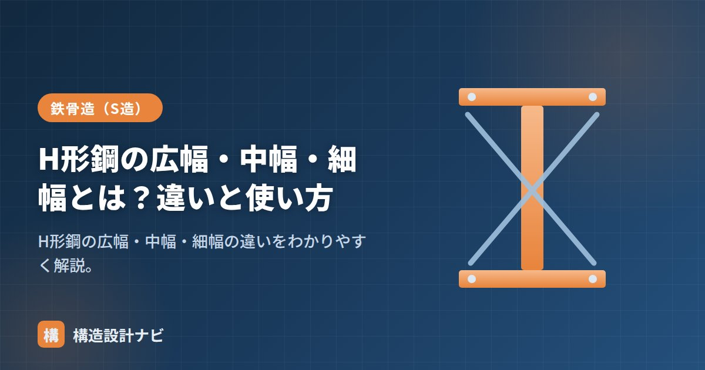

H形鋼の広幅・中幅・細幅とは？違いと使い方

H形鋼は、せい（高さ）とフランジ幅の比率によって広幅（こうふく）・中幅（ちゅうふく）・細幅（さいふく）の3系列に分かれます。同じ「H-300」でも幅の違いで断面の性格がまったく変わるため、どの系列を選ぶかで柱向き・梁向きが決まります。
- H形鋼はせいと幅の比率で広幅・中幅・細幅の3系列に分かれる。
- 幅が広いほど弱軸方向の性能が高くなり、2方向の力に強い柱向きになる。
- 系列選びは断面性能だけでなく、接合のしやすさや梁せいの制約にも関わる。
3系列の違い
| 系列 | せい:幅 | 例 | 主な用途 |
|---|---|---|---|
| 細幅 | 約2:1（せいが大きい） | H-400×200、H-600×200 | 梁 |
| 中幅 | 約1.5:1 | H-294×200、H-340×250 | 梁・柱 |
| 広幅 | 約1:1（せい≒幅） | H-300×300、H-400×400 | 柱 |
同じ「せい400」でも、細幅は幅200mm前後、広幅は幅400mm前後というように、幅の広がり方が系列ごとに大きく異なります。形鋼表ではこの3系列がそれぞれ独立したサイズ表として掲載されているのが一般的です。
特徴：断面性能の違い
- 細幅：せいが大きく強軸の断面二次モーメントIxが大きい。一方向（強軸）の曲げに効率的で、梁に最適。
- 広幅：幅が広く弱軸のIy・Zyも大きい。2方向の曲げに強く、X・Y両方向から力を受ける柱に最適。
- 中幅：両者の中間。梁にも柱にも使える汎用的な系列。
柱はどの方向に倒れる（座屈する）かわからないため、弱軸方向にもしっかり強い必要があります。広幅はIx/Iyが約3倍程度に収まり2方向に強いので柱向き。細幅はIx/Iyが10倍以上と強軸に偏るため、向きが決まった梁向きです（詳しい比較は「強軸・弱軸」を参照）。
幅で系列が分かれる理由
H形鋼の断面性能は、フランジ幅を広げるほど弱軸方向（Y軸）の断面二次モーメントIyが大きく伸びます。一方、強軸方向（X軸）の性能はせいの影響が大きく、幅を広げてもIxはそれほど増えません。つまり幅を変えることは、弱軸性能だけを選択的に強くする操作にほぼ相当します。この性質を利用して、強軸だけ強ければよい梁には細幅を、2方向に均等に強くしたい柱には広幅を、というように用途に応じた系列がラインアップされているわけです。
また、フランジ幅はボルト接合の座付き幅や本数にも影響します。幅が広いほど高力ボルトを並べる余地が生まれるため、柱頭・柱脚のように多くのボルトで応力を伝えたい接合部では、広幅系列のほうが納まりやすい傾向があります。
選定の目安：梁・柱・用途別
- 大梁・小梁：細幅（または中幅）を、せいを縦にして使う。強軸の曲げ性能を最大限に活かす。
- 柱：広幅、または角形鋼管を使う。地震・風はX・Y両方向から作用するため、弱軸にも強い断面が必要。
- 片持ち梁・小規模な架構：スパンや荷重が小さい場合は中幅を使うこともある。断面性能と鋼材量のバランスで選ぶ。
- 同じせいでも系列によって単位重量が異なるため、重量の計算方法もあわせて確認すると選定しやすい。
Q1. 中幅は梁と柱のどちらでも使えますか？
使えます。中幅はせいと幅の比率が中間的で、強軸・弱軸ともにそれなりの性能を持つため、小梁や小柱など、極端な性能を必要としない部材に汎用的に使われます。
Q2. 広幅を梁に使ってはいけませんか？
禁止されているわけではありませんが、広幅は幅が広い分だけ単位重量が大きくなりやすく、梁に使うと鋼材量が増えてしまいます。強軸の曲げが支配的な梁では、効率のよい細幅・中幅を使うのが一般的です。
性能値は「断面性能・単位重量一覧」、強軸・弱軸は「強軸・弱軸」、断面二次モーメントの計算は「断面二次モーメント」、基礎は「H形鋼とは」をどうぞ。
系列を選ぶ理由を説明するとき、私がいつも付け加えるのは断面性能だけの話ではないということです。柱頭・柱脚で高力ボルトを並べる余地を考えると、Ix・Iyの数値以上に広幅の方が接合部の納まりが良く、結果的に選ばれることが実務では多くあります。
まとめ
- H形鋼はせい:幅の比率で細幅（約2:1）・中幅（約1.5:1）・広幅（約1:1）に分かれる。
- 細幅は強軸に強く梁向き、広幅は2方向に強く柱向き、中幅は汎用。
- 幅を広げると弱軸性能が選択的に伸びるため、柱には広幅が合理的。
- 接合部のボルト配置や単位重量も、系列選びの実務的な判断材料になる。